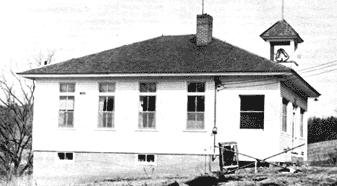
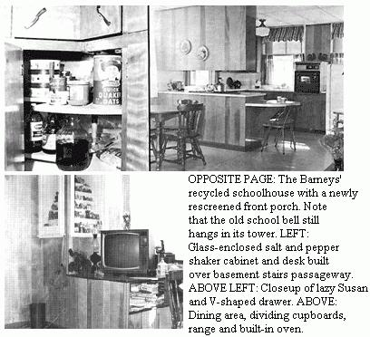

What can you do if you're sick of the city and want to get back to the land . . . but your limited income won't let you buy a farm or build a house?
Well, our personal solution to that problem was to bid on an abandoned schoolhouse, cross our fingers and-when we got it-remodel the old building into a modern home. Since there are many abandoned schoolhouses in almost every section of the country, the idea can easily mean a new life for your family too. Here's how we obtained a $15,000 home for $4,000 and how you might do even better.
Forty-two years ago this fall, I struggled with my phonetics in a little, nearly-new 32-foot square schoolhouse. The corner where I tried so hard to pronounce my W's is now part of our large and delightfully airy bedroom, thanks largely to my husband. With manual skill and an artistic eye, he remodeled that old building into a very comfortable and presentable home.
Archie designed all our rooms to take advantage of existing windows and heat ducts. The only new windows added were a pair in the northeast bed room to replace the old blackboards. With these installed, we have a view of the countryside in all four directions.
The small upper windows you see in the outside view of the house are covered on the inside. They are also above the suspended ceiling which we dropped four feet below the old ceiling to make all the main rooms cozier.
The main living area is open, with only cupboards and a chair-height eating bar dividing the kitchen from living and dining areas. On the bar side of the cupboards is a built-in range unit. The oven is on the opposite wall. A lazy Susan and V-shaped drawer make ingenious use of the corner section of the cupboard.
A former carpenter had constructed a bookshelf and desk-like structure over a "head room" passage for the basement stairs. By cutting out both sides of the bookcase and enclosing it in glass, Archie made a showplace for my salt and pepper shaker collection. He even added staggered shelves to allow more sets to be displayed at a time. The desk is an ideal place for our television, telephone and some house plants.
A large cold air return duct was attractively covered with twin louvers to make both a conversation piece and a display area for small figurines.
There was already a bath in the basement and we added one upstairs to make ours a two bath home.
Four small rooms across the front of the building that were originally library, entryway and cloakrooms are now a combination sewing and linen closet, large walk-in clothes closet, a closet to store cleaning tools and an entryway into the main living quarters.
We screened in the eight by thirty-two foot porch across the front of the house. It makes an ideal resting place from which to watch the wildlife that abounds here.
One and seven-tenths acres of ground came with the schoolhouse. On it, we raise a large and profitable vegetable garden and still have room for a spacious lawn, complete with the teeter-totters left from earlier days.
Our home and property is insurable for fifteen thousand dollars. It cost us, including finished basement, less than four thousand. Can you do the same? You can surely try!
The best way to obtain an abandoned schoolhouse is to write to The State Department of Education in the state of your choice. Ask for a list-with addresses-of school administrators. Then pick out an area that interests you. Write to the school administrator in charge and inquire about schools that may be for sale.
Most of these old buildings are sold for sealed bids, as was ours. A few are sold at public auction and the administrator will notify you of time of sale or the time your bid must be in.
These schoolhouses have been and are being bought for prices ranging from $100 to $3500. All are cheap when you consider that heating units, well and-usually-a pressure water system are included.
Thanks to the thousands of abandoned schoolhouses that are available, a retirement home like ours is within reach of almost anyone.
|
 |
 |
|